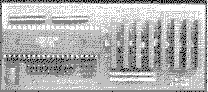
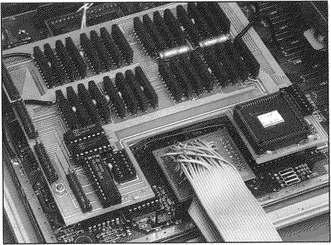

Previous
Next
TOC
Die steckbare 4 Megabyte Speichererweiterung der Firma Hard und Soft

Nun sehen Sie die sehr seltene Speichererweiterung von GE Soft,
welche einem Atari MegaST auf bis zu 16 Megabyte Ram verhalf. Diese
Karte war aufgrund ihres damaligen Preises leider nur selten zu be-
kommen.

weiterblättern
Kapitel Die Speichererweiterungskarten, Seite 5